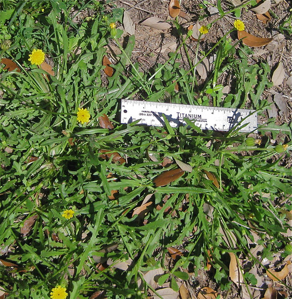
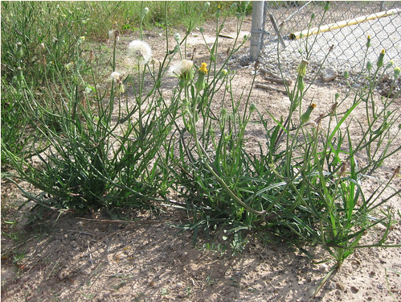
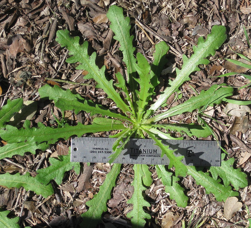
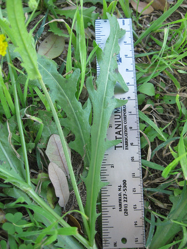
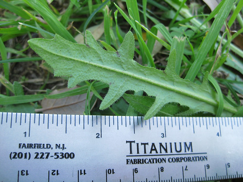
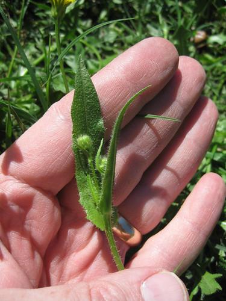
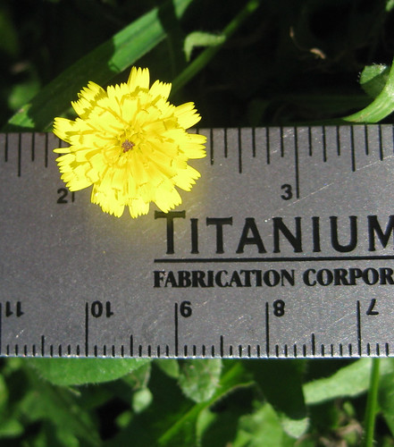
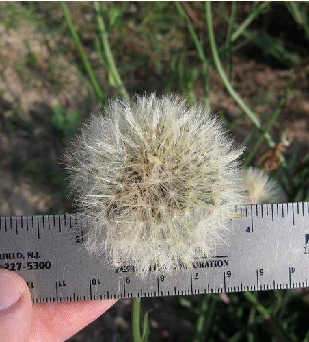
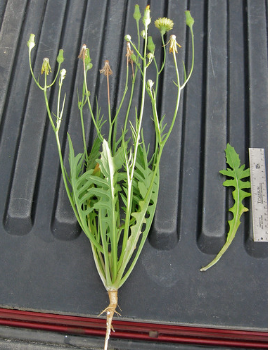
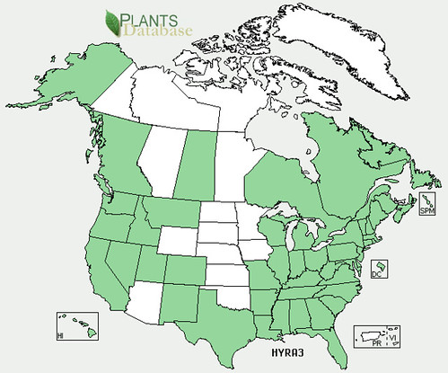

Cat's Ear
Scientific name:
Hypochaeris radicata
Abundance:
common
What:
young leaves and shoots, roots
How:
raw or cooked, roots roasted for coffee
Where:
disturbed areas, yards, sunny fields
When:
winter/spring/fall
Nutritional Value:
minerals and antioxidants
Medicinal Summary:
Leaves/Root - sedative, muscle relaxant (
tisane, tincture)
Leaf Arrangement: The leaves of Hypochaeris radicata form a basal rosette, which means they grow in a circular arrangement at the base of the plant, close to the ground.
Leaf Shape: The leaves are generally oblong or lanceolate, often with lobes that can be irregular/asymmetrical.
Venation: The venation is pinnate, where a central vein runs along the length of the leaf with smaller veins branching off to the sides.
Leaf Margin: The margins of the leaves are usually toothed or slightly lobed, giving them a serrated appearance.
Leaf Color: The color of the leaves is typically a medium to dark green, sometimes with a hint of red or purple along the veins or edges.
Flower Structure: Hypochaeris radicata produces flower heads at the ends of slender stalks. Each flower head is composed of many small yellow ray and disk florets, resembling a dandelion flower.
Flower Color: The flowers are bright yellow.
Fruits: The fruit is a small, dry, one-seeded achene that is brownish and ridged, often with a tuft of fine hairs (pappus) at the top, aiding in wind dispersal.
Seeds: The seeds are small and oblong, with a pappus (feathery umbrella) that facilitates wind dispersal.
Stems: The flowering stems are erect, hollow, and branched, often reaching heights of 10 to 20 inches. They are typically green and may have fine hairs. Stems branch multiple times.
Hairs: The edges and undersides of leaves have fine hairs, as do the stems.
Plant Height: The plant usually grows to a height of about 12 to 24 inches.
Cluster of Cat's Ear plants (mowed).

Cluster of Cat's Ears (never mowed).

Young Cat's Ear rosette, before flower stalks appear.

Close-up of topside of leaf.

Close-up of bottom side of leaf.

Close-up of flower bud and stalk.

Close-up of flower.

Close-up of seeded.

A single plant from root to flower.

North American distribution, attributed to U. S. Department of Agriculture.

Cat's ear is often mistaken for a dandelion, which it resembles. However, the leaves of cat's ears are less sharply toothed and more asymmetrical than dandelions, as well as having hairs on the top and bottom of the leaf whereas dandelions are hairless. Cat's ears will produce multiple flowers of one main, non-hollow stalk while dandelions produce only one flower per stalk and the dandelion stalk is hollow.
Cat's ear leaves and roots can be used in the same manner as dandelions. The leaves are a bit less bitter than dandelions, making them a good "dilutant" of the bitterness of dandelions, sow thistle, chicory, or other bitter greens. After the cat's ear flowers appear the leaves become somewhat stringy and tough, but tenderize with steaming or boiling.
Cat's ear roots are smaller than dandelion roots, but larger ones can still be steamed then eaten. These roots make an inferior coffee substitute after roasting, but will still work in that manner. Dig up the roots, scrub them clean, roast them in an oven at 425F to the dark color you prefer, coarsely grind them, then using them as regular coffee grounds. The result will be "coffee" in that it will be a dark, somewhat bitter drink.
Cat's Ears have an interesting adaption to urban lawns. After being mowed a few times their leaves and flower stems stop growing upwards and start growing flat against the ground. These two forms are shown in the first photographs of this post.
{kind=link}
{kind=link}
{kind=link}
{kind=link}
{kind=link}
{kind=link}
{kind=link}